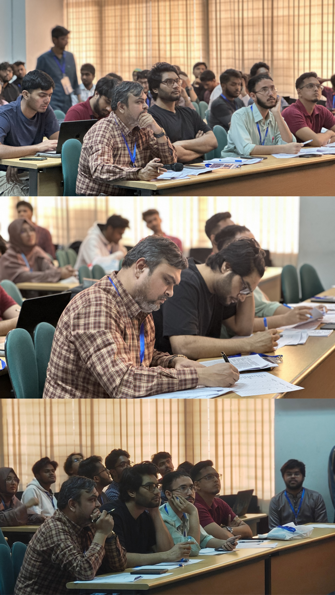
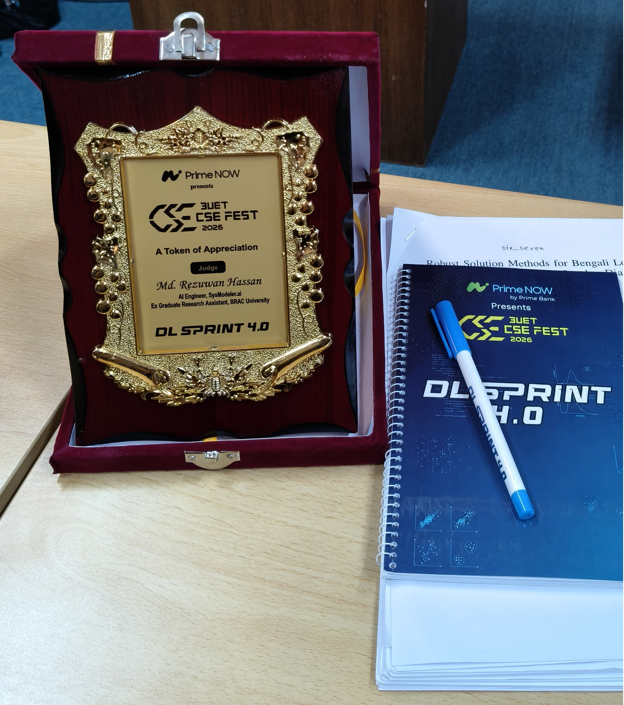
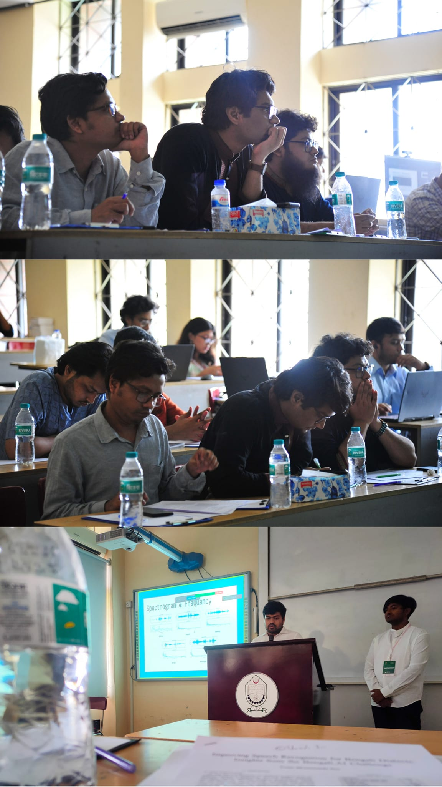
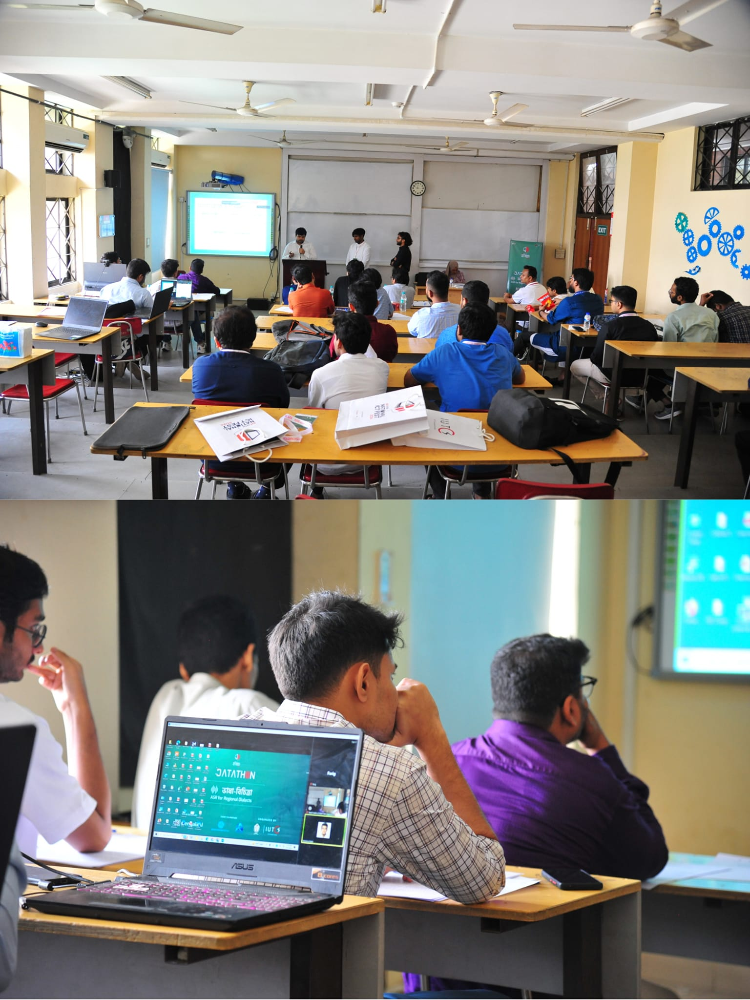
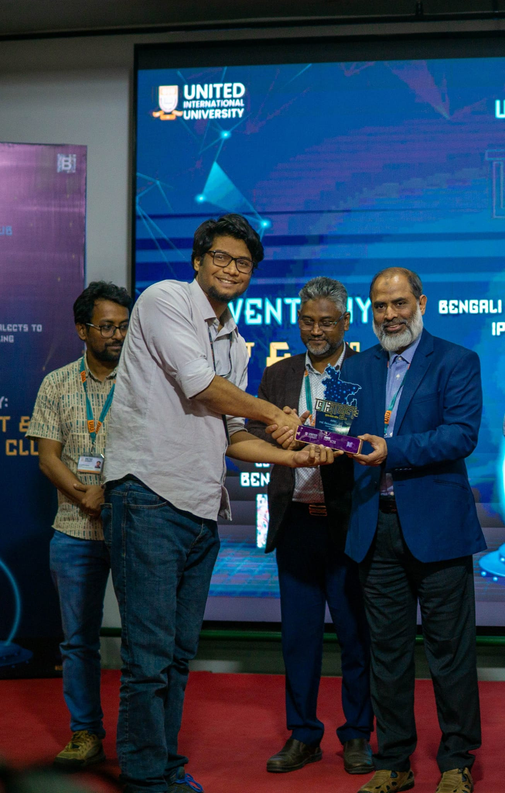
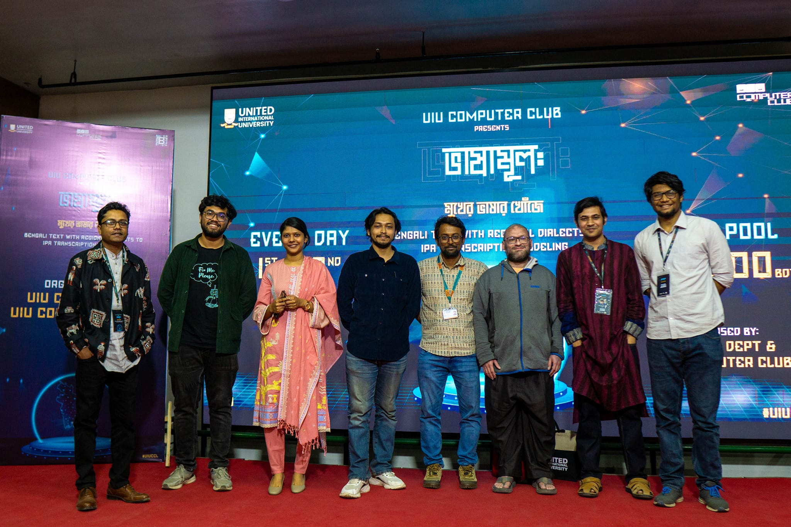
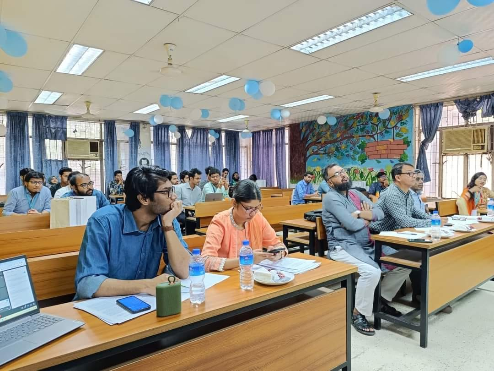
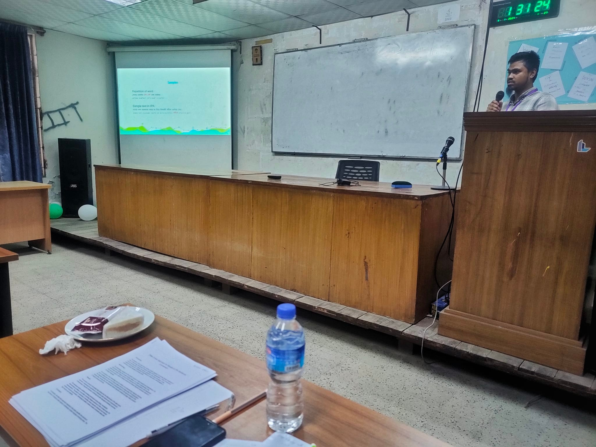
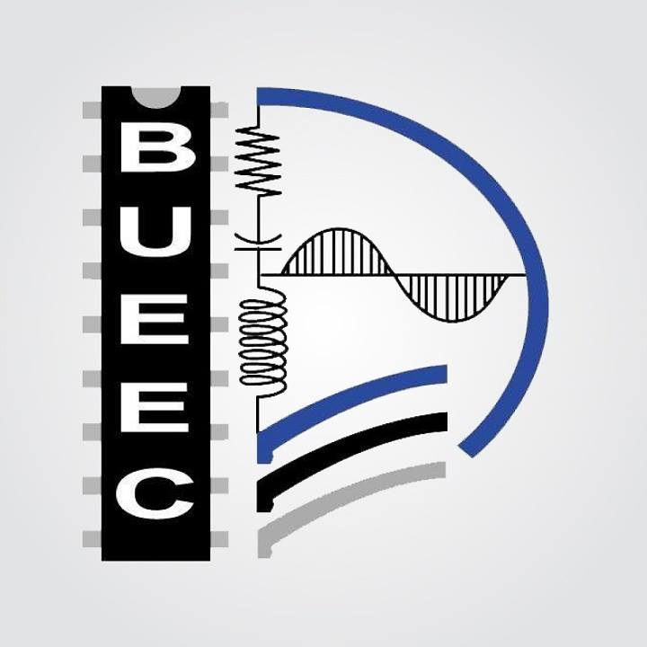
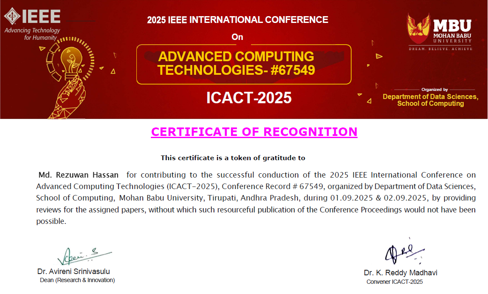

Adjudications & Judging
Competitions, datathons and contests I have judged — several of them running on datasets I built or co-developed at Bengali.AI and during my M.Sc. research.
National Deep Learning & Datathon Competitions
-
Adjudicator — DLSprint4
Bangladesh University of Engineering and Technology (BUET), Department of CSEMarch 2026
Invited to adjudicate the national deep learning competition DLSprint4, organised by the CSE department of BUET. The problem set covered Bengali long-form audio transcription and multi-speaker diarization.



-
Adjudicator — Bhashabichitra: ASR for Regional Dialects
Islamic University of Technology (IUTCS)April 2024
The dataset used in this national ICT fest's datathon segment was an extended version of the corpus I developed from scratch as part of my master's thesis research, which I later extended with my team at Bengali.AI. Huge thanks to the IUT Computer Society for orchestrating such a fantastic event.



-
Adjudicator — Bhashamul: Bengali Text with Regional Dialects to IPA Transcription Modeling
United International University (UIU CSE & UIU Computer Club)March 2024
The dataset used in this national-level datathon was a prototype from one of the research projects I currently lead with my team at Bengali.AI.



-
Adjudicator — Datathon Challenge, Cefalo presents ITverse 2023
University of Dhaka, IIT Software Engineers' CommunityNovember 2023
The dataset from one of my co-authored research papers (Bengali text to IPA transcription) was used in this national deep learning competition. I was invited to judge on behalf of Bengali.AI and evaluated the submissions of the top participating teams from across Bangladesh.



-
Adjudicator — Electroditor (Tech Write-up Contest)
BRAC University Electrical and Electronic Club (BUEEC)March 2021
Invited to evaluate the writings of participants in the technical write-up contest "Electroditor".

Peer Review
-
Manuscript Reviewer
IEEE International Conference on Advanced Computing Technologies (ICACT 2025)September 2025
Invited to serve as a paper reviewer by the organising committee. Reviewed submissions focusing on AI-driven innovations, contributing to the conference's academic quality and integrity.

Related
- Talks — invited talks, panels and webinars
- Awards & Achievements — competition results, certifications and honours
- Volunteering — community service